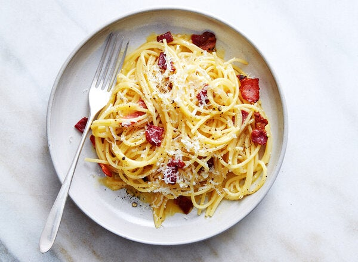

Spaghetti Carbonara

Description
This is a recipe for a classic Spaghetti Carbonara, one of the simplest and tastiest pasta dishes youcan make.
Ingredients
- 4 Eggs
- 1/2 cup Grated Pecorino Romano Cheese
- 1/2 cup Grated Parmesan Cheese
- Black Pepper
- Salt
- Olive Oil
- 1/4 Pound of Guanciale or Alternative Fatty Pork Cut Like Bacon
- 1 Pound Uncooked Pasta of Choice
Directions
- Bring a large pot of water to a boil and salt liberally, then add in your pasta.
- Whisk together the eggs and cheeses and season with salt and pepper
- Heat up olive oil in a pan and add in your pork cut, then sautee until the fat is rendered and the meat begins to crisp
- Remove pasta and place into large mixing bowl along with one cup of pasta water, then mix in the cheese mixture and pork.
- Grate additional cheese to taste and serve!